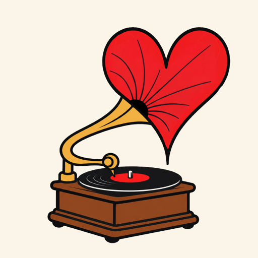

GramophilePrivacy Policy
Effective 2 October 2026 (updated for Spotify)
Gramophile keeps a diary of the records, CDs and tapes you play. It has no server of its own and no accounts: your listening history stays on your iPhone. Data only leaves your phone to recognise a song, to look up music information, or to reach a music service you have chosen to connect. Gramophile does not track you, show ads, use analytics, or sell or share your data.
Who we are
Gramophile is an independent app. Questions about this policy or your data: hello@lovegroove.app.
Microphone and song recognition
Gramophile uses the microphone only while you have asked it to listen: after you tap the record, the Listen button on the lock screen or in Control Center, or ask Siri. During a listening session it may listen again briefly to follow the record, for example after you flip a side. Your iPhone shows its microphone indicator whenever the microphone is on.
To identify a song, Gramophile sends Apple's ShazamKit service a signature of the sound (a fingerprint, not a recording). Gramophile never records, stores or shares your audio. Apple's handling of this is covered by Apple's privacy policy.
What stays on your iPhone
- Your listening history: song, artist, album, format, genre and style, when you played it, and a link to the cover art. Insights are calculated from it on the phone.
- Your settings and the records you've told Gramophile to use for a song (“Wrong record?”).
- Sign-in tokens for the services you connect, kept in the iPhone's secure Keychain.
You can delete entries from History at any time, or export your history as a spreadsheet. Deleting the app removes all of this data from your phone. Gramophile has no copy anywhere else.
Services you choose to connect
All of these are optional. Gramophile only talks to them on your behalf once you connect them, and you can disconnect each one in Gramophile's settings at any time. Disconnecting removes its sign-in tokens and settings from your phone. You can also revoke Gramophile's access from the service's own website.
- Last.fm: the songs you play are sent to your Last.fm profile as scrobbles and “now playing” updates, and Gramophile can love songs for you. Last.fm privacy policy.
- Discogs: Gramophile reads your collection to find the record you're playing, and can add records to your wantlist. Discogs privacy policy.
- TIDAL: Gramophile looks up the songs you play, can add them to your favourites, save albums, and add played songs to a playlist of your choosing. TIDAL privacy notice.
- Apple Music: Gramophile can add songs and albums to your library and played songs to a playlist. Apple's privacy policy.
- Spotify (Labs): you connect through a Spotify developer app you create yourself, and its Client ID is kept on your phone. Gramophile looks up the songs you play, and can add them to your Liked Songs, save albums, and add played songs to a playlist. It never reads your Spotify listening history. Spotify privacy policy.
Looking up music information
To show covers, album details, song lengths and links, Gramophile sends song, artist and album names to Discogs, Apple's iTunes Search and Last.fm. These requests carry no personal information beyond what any internet connection involves, such as your IP address.
Sharing
Nothing is shared unless you tap Share. A shared link opens this website and contains only the song, artist, album, format, and the song's Apple Music and TIDAL catalogue numbers, never your name or accounts. The website is hosted on GitHub Pages and looks up the song with Apple's iTunes Search. GitHub's handling of visits is covered by GitHub's privacy statement.
Photos
If you save a share card, Gramophile asks for permission to add images to your photo library. It cannot see or read your photos.
Siri, lock screen and Control Center
Siri commands, the lock-screen panel and the Control Center button run on your phone and only control Gramophile.
Your rights
Because Gramophile keeps no data about you outside your phone, you control it directly: delete history entries, disconnect services, or delete the app. For data held by Last.fm, Discogs, TIDAL or Apple, use their own privacy tools. If you have a question or concern, email the address above. If you're in the UK or EU, you can also complain to your data protection authority (in the UK, the ICO).
Children
Gramophile is not directed at children under 13 and does not knowingly collect their data.
Changes
If this policy changes, the new version will be posted on this page with a new effective date.
This application uses Discogs’ API but is not affiliated with, sponsored or endorsed by Discogs. ‘Discogs’ is a trademark of Zink Media, LLC.